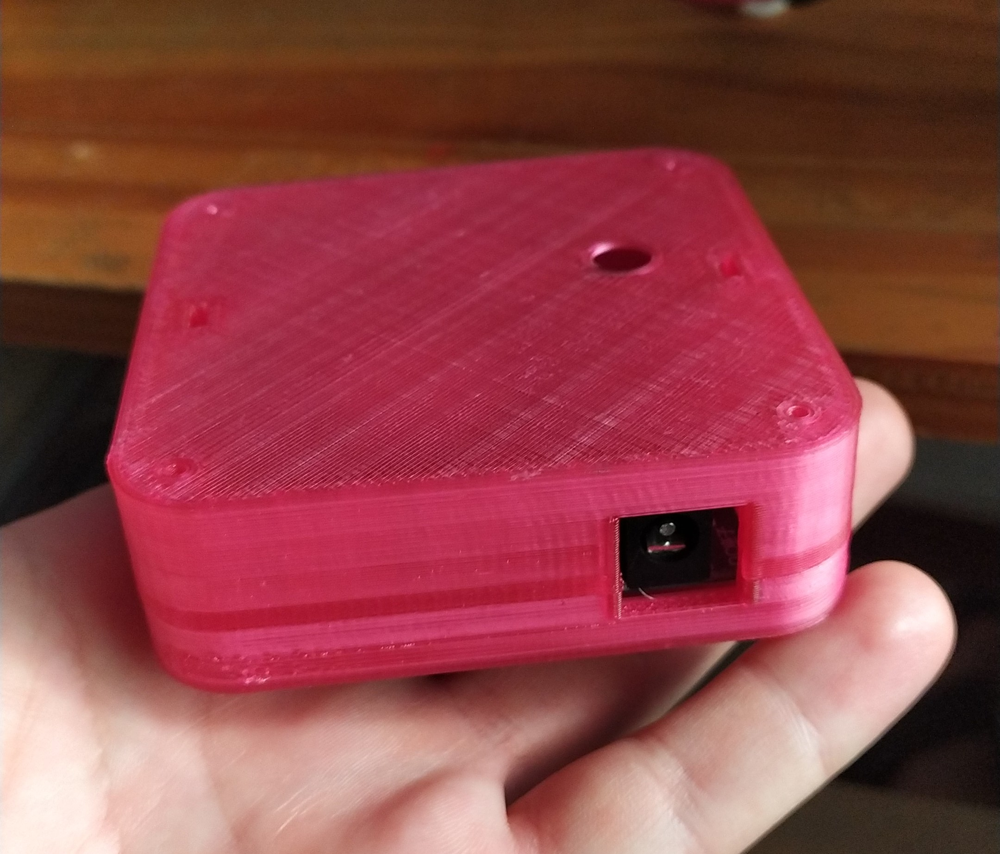

¡Alarma Pico y Placa!
¿Te multaron? ¡Tenemos una alarma para que no vuelva a pasár!

Nuestro producto
Después de muchos años trabajando en una solución infalible e innovadora para las multas de pico y placa, SOAT y otras, hemos dado con el producto perfecto. Una cajita que pita y te salva de los comparendos.
Utilizar aplicaciones que te recuerden del pico y placa no evitará al 100% de las multas. A pesar de que tu celular te notifique que tienes pico y placa, es posible que el trabajo o tus actividades te hagan olvidar en poco tiempo. Además, si no eres la única persona en tu casa que utiliza el o los vehículos se aumenta la probabilidad de que te multen a ti o a alguien de tu familia.
En Cero Multas hemos recopilado historias increíbles de varias personas que han sido víctimas de comparendos y multas. Este producto te ahorrará tiempo, dinero y además te dará tranquilidad a ti y a tus seres queridos.
Historias...
Martín Varela
Los primeros días de enero en Cali mucha gente se va de viaje y debido a esto la alcaldía quita el pico y placa hasta el 15 de enero. Me multaron el primer día del año que hubo pico y placa en la ciudad.
Juan Oviedo
En Bogotá, cuando cambia el mes en fin de semana, tienes pico y placa el viernes y el lunes. Muchos nos confundimos por este tipo de eventos. Yo pensé que no tenía pico y placa el lunes debido a que tuve el viernes y me multaron.